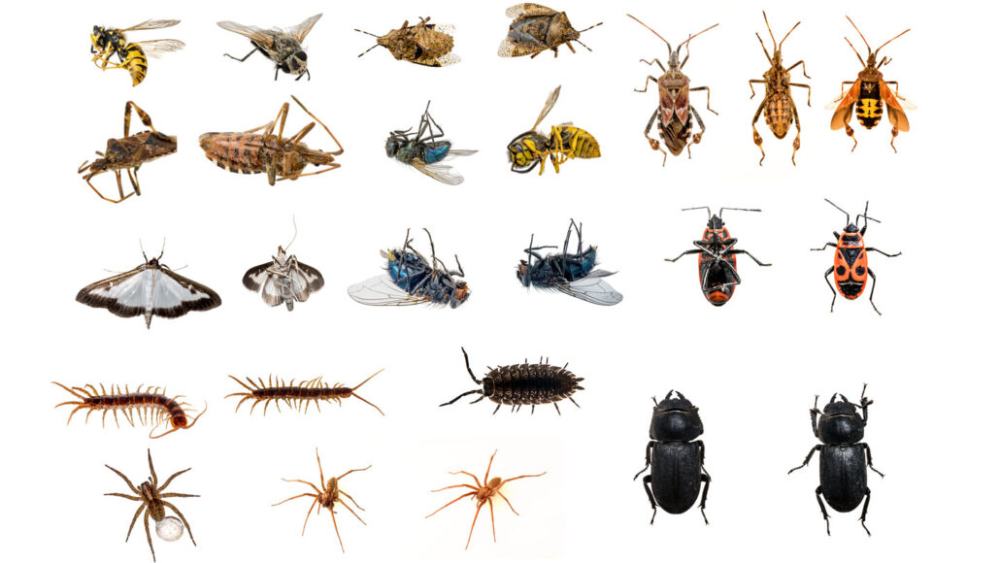
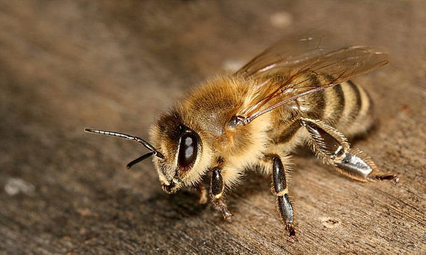
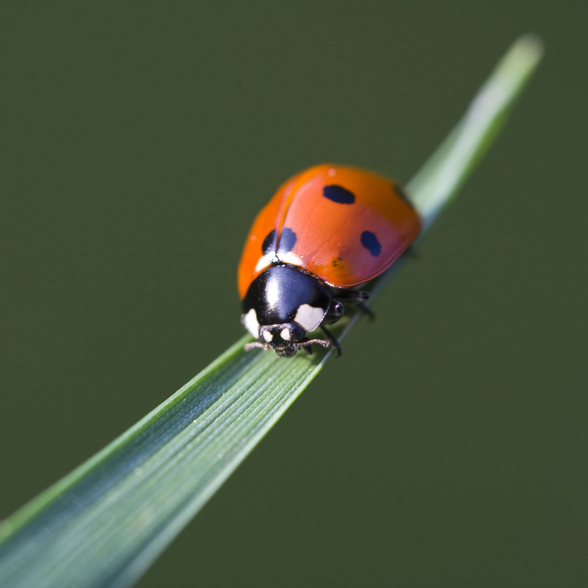
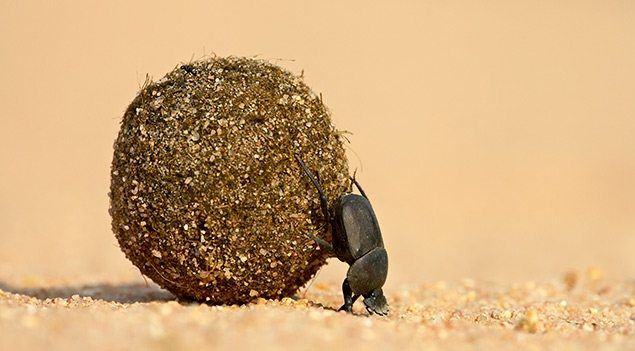
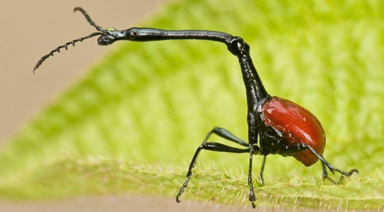

Insect

Insects

Bee

Buge

Butterfly

Cockroach
 ,
,Spider
Insects:

(from Latin insectum) are pancrustace.an hexapod invertebrates of the class Insects.
They are the largest group within the arthropod phylum. Insects have a chitinousexoskeleton,
a three-part body (head, thorax and abdomen), three pairs ofjointed legs,
n compound eyes and one pair of antennae. Their blood is not totally contained
in vessels; some circulates in an open cavity known as the haemocoel. Insects are the most
diverse group of animals; they include more than a million described species and represent
more than half of all known living organisms.[1][2] The total number of extant
species is estimated at between six and ten million;[1][3][4] potentially over 90% of
the animal life forms on Earth are insects.[4][5] Insects may be found in nearly allenvironments,
although only a small number of species reside in the oceans, which are dominated by another arthropod group,
crustaceans, which recent research has indicated insects are nested within.
Nearly all insects hatch from eggs. Insect growth is constrained by the inelastic exoskeleton
and development involves a series of molts.
The immature stages often differ from the adults in structure, habit and habitat, and can include a usually
immobile pupal stage in those
groups that undergo four-stage metamorphosis. Insects that undergo three-stage metamorphosis
lack a pupal stage and adults develop through
a series of nymphal stages.[6] The higher level relationship of the insects
is unclear. Fossilized insects of enormous size have been found
from the Paleozoic Era, including giant dragonflies with wingspans of 55 to 70 cm (22 to 28 in). The most diverse
insect groups appearto have coevolved with flowering plants.
Bees:

members of the Apidae family,
are flying insects that collect nectar and pollen.
There are many different types of bees, possibly 20 000 species,
and there are many differences between them.
Some make honey and some don't. Some can sting, while others can't.
Bees feed on nectar and pollen, the former primarily as an energy source
and the latter primarily for protein and other nutrients.
Most pollen is used as food for their larvae. Vertebrate
predators of bees include primates and birds such as bee-eaters;
insect predators include beewolves and dragonflies.
Bug:

Bugs, also known as insects, can often be seen as an annoyance to humans,
but they play a huge part in our world and 90% of all living things are insects,
so they’re very important. eat more plants than any animal on earth. They eat dead plants
and animals and they themselves are a main source of food for many other animals.
Bugs are useful because they produce honey, wax, silk and other products
The great outdoors is a place where the sun is shining and the flowers are calling.
It’s amazing to spend the day outside basking in the sunshine while reading a book or
relaxing after a tough week. However, some would prefer to spend their days indoors because
of insects and bugs. Some are prone to allergies and the common misconceptions that we have
about them are too overwhelming to ignore. Journey with us as we see these creatures in a
different light. Get ready to appreciate and learn more about them now in these really cool
bug facts.
Fact about bugs:
- 1) A ladybird might eat more than 5,000 insects in its lifetime!

- 2) Fruit flies were the first living creatures to be sent into space.
- 3)Dragonflies have been on earth for 300 million years!
- 4)The stag beetle is the largest species of insect to be found in the UK.

- 5) Caterpillars have 12 eyes!
- 6) One dung beetle can drag 1,141 times its weight – that’s like a human pulling six double-decker buses!
- 7) Ladybirds sometimes play dead to avoid predators
- 8) Male giraffe weevils use their long necks to fight each other.

- 9) Greater water boatmen breathe through their bottom!
up